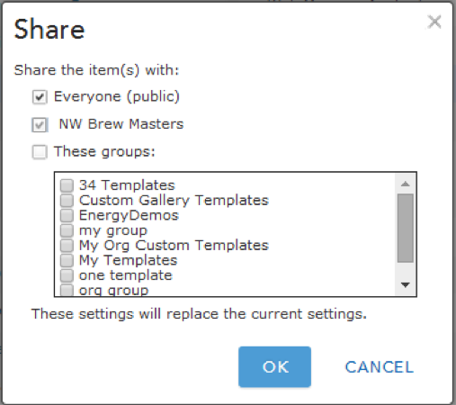
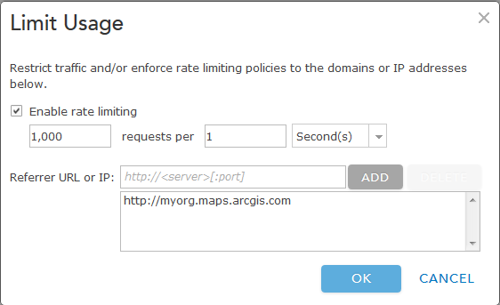
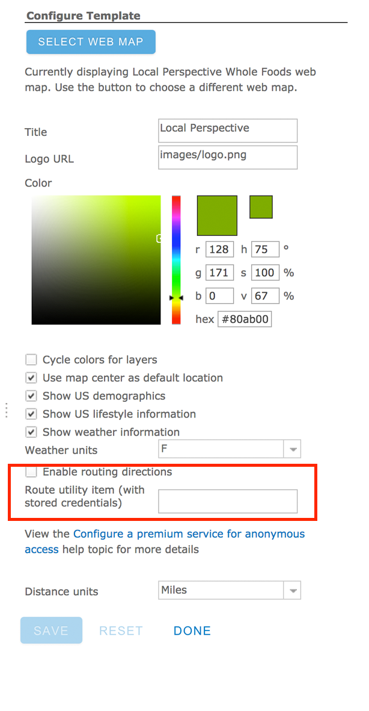

Configure a Premium Service for anonymous access
This configurable app supports the configuration of the premium route service to support anonymous access scenarios like providing driving directions to a fixed destination or locating the closest site to the user’s location and routing them to that location.
Before you can publish and share your app, you need to follow the steps below to configure the route service for anonymous access.
- Create a new item in ArcGIS Online or your portal
- Share the item with everyone. Sharing it with just the groups in your organization will still require users to login to access it. 
- Limit usage of the route service you just added by defining rate limiting and referrer.
- On the item details page, click Edit then under Advanced Options click Limit Usage.
- Check Enable rate limiting and specify the number of requests per time period you want to allow.
- Specify the Referrer URL or IP to further restrict traffic. You can provide either the URL to your app, or if you plan to have multiple configurable apps that use this service you can specify the URL the configurable app root directory instead. The configuratble app root directory will look something like this: http://www.arcgis.com/apps.

- Copy the URL for the item from the ArcGIS Web REST Connection section. You will need this URL when configuring the app.

- Return to the template configuration panel and configure the app to use the secure service by pasting the URL you copied in step 4 into the Route utility item field.